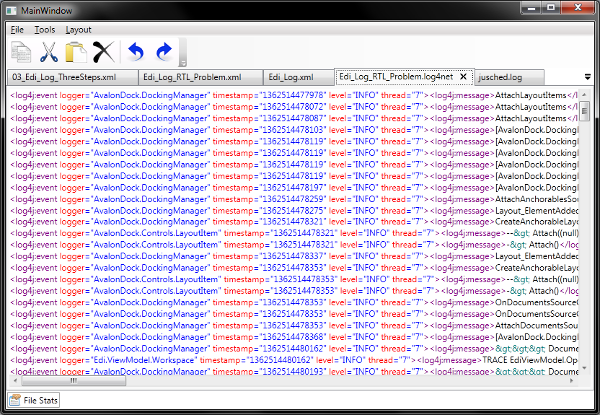
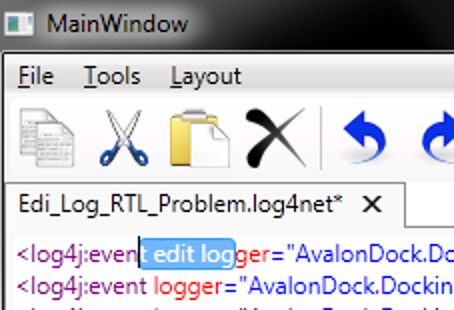
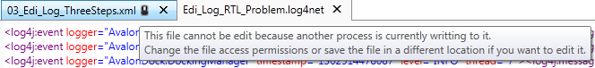

I have been spending a reasonable amount of time getting experience with AvalonDock [2.0] and the MVVM pattern in WPF [2]. This series of articles is written in the hope that I can pass some of these experiences on to those who code. My first two articles [1] on this subject were focused on using a custom tool window (Recent Files TW with pinable list) and a custom document control (Start Page). I am going to progress this series by showing how one can integrate the well known AvalonEdit editor from SharpDevelop into AvalonDock [2.0] without bending or even breaking the MVVM pattern. This series is then progressed by showing particular AvalonDock [2.0]/AvalonEdit features and how we can get them to work with MVVM in mind.
You can re-create all steps that I have gone through, if you want to understand all details I am showing here. This section describes the preperation steps necessary to follow me as I talk us through it.
The preparation for AvalonEdit includes downloading the source code from SharpDevelop, extracting AvalonEdit, and integrating it into the Edi sample application. Here is what you need to prepare for getting AvalonEdit into AvalonDock [2.0]:
- Download SharpDevelop-master.zip from https://github.com/icsharpcode/SharpDevelop
Find the AvalonEdit Sub-Project at
SharpDevelop-master\src\Libraries\AvalonEdit
and copy it into the Edi solution.
Copy SharpDevelop-master\src\Main\GlobalAssemblyInfo.cs
into the Edi\AvalonEdit
directory.
- Open the AvalonEdit project in Visual Studio and remove the broken reference to the
GlobalAssemblyInfo.cs file in the Properties section of the Project's Solution Explorer entry.
- Click on the project and select Add>Existing item to add the
GlobalAssemblyInfo.cs file that you just copied into the extracted AvalonEdit project.
- Review the project properties and reset the binaries output folder from
..\..\..\..\bin\
to something more appropriate like like: bin\
DOTNET4
symbol from the project properties, if you want to develop with a different .Net framework.
Add the AvalonEdit project via context menu on Solution>Add>Exisiting Project... and add the ICSharpCode.AvalonEdit.csproj.
Add a reference from the main application project Edi into the ICSharpCode.AvalonEdit.csproj project.
- Build the solution (it should build successfully).
Completing this step successfully means that we re-configured AvalonEdit such that it compiles in an AvalonDock project. Next we are going edit the sample project such that it will use AvlaonEdit as text editing component.
Integrate AvalonEdit into the AvalonDock [2.0] based Application
An MVVM based WPF application has usually at least three levels (View, ViewModel, and Model) where the last layer is sometimes part of the ViewModel classes. The AvalonDock sample application already contains a view and viewmodel class for text editing, so we simply replace it with something more advanced than the Microsoft standard textbox. The next sub-sections list changes required to adjust the view and the viewmodel.
The View
Open the Edi solution and browse to View/MainWindow.xaml. This is the main window that you will see when you start the application. Adding AvalonEdit into this view requires a namespace reference and of course the XAML tag itself. So we add a namespace reference (at about line 10).
xmlns:avalonEdit="http://icsharpcode.net/sharpdevelop/avalonedit"
Next we add the XAML tag itself. Locate the TextBox entry that refers to the view that is currently configured for usage with the FileViewModel class.
<pane:PanesTemplateSelector.FileViewTemplate>
<DataTemplate>
<TextBox Text="{Binding TextContent, UpdateSourceTrigger=PropertyChanged}"/>
</DataTemplate>
</pane:PanesTemplateSelector.FileViewTemplate>
Replace the XAML tag above with the AvalonEdit reference listed below:
<pane:PanesTemplateSelector.FileViewTemplate>
<DataTemplate>
<avalonEdit:TextEditor
Document="{Binding Document, UpdateSourceTrigger=PropertyChanged}"
/>
</DataTemplate>
</pane:PanesTemplateSelector.FileViewTemplate>
The ViewModel
Open the Edi solution and browse into the ViewModel/FileViewModel.cs class and review the TextContent property and replace this property with an AvalonDock specific Document property:
#region TextContent
private TextDocument _document = null;
public TextDocument Document
{
get { return this._document; }
set
{
if (this._document != value)
{
this._document = value;
RaisePropertyChanged("Document");
IsDirty = true;
}
}
}
#endregion
The dependency property system in the .Net framwork is very efficient but Sending and receiving text changes through dependency properties (while your typing) can slow down an editor. This is why, the TextDocument class wraps around the editing text (instead of exposing the string directly through a binding). The TextDocument class that implements the Document binding exposes the text through a simple CLR property.
The idea for communicating text between view and viewmodel is that the application can use the CLR Text property in the TextDocument class to write or read the text string when loading or saving the text data; -while leaving the editing to the editor. We will see later in this tutorial that this approach does require extra work to stay with MVVM (when selecting text). But it is a good design measure to implement an efficient WPF application that deals with great amounts of data. Therefore, this point is worth the extra note.
Next we need to edit the text load and save methods that are already implemented in the sample application. The load method is actually in the Filepath property of the FileViewModel class. Edit the Filepath property to make it use the new Document property:
#region FilePath
private string _filePath = null;
public string FilePath
{
get { return _filePath; }
set
{
if (_filePath != value)
{
_filePath = value;
RaisePropertyChanged("FilePath");
RaisePropertyChanged("FileName");
RaisePropertyChanged("Title");
if (File.Exists(_filePath))
{
this._document = new TextDocument();
using (FileStream fs = new FileStream(this._filePath,
FileMode.Open, FileAccess.Read, FileShare.Read))
{
using (StreamReader reader = FileReader.OpenStream(fs, Encoding.UTF8))
{
this._document = new TextDocument(reader.ReadToEnd());
}
}
ContentId = _filePath;
}
}
}
}
#endregion
The save text method is in the Workspace.cs file. Locate the Save method and replace it with the code below:
internal void Save(FileViewModel fileToSave, bool saveAsFlag = false)
{
if (fileToSave.FilePath == null || saveAsFlag)
{
var dlg = new SaveFileDialog();
if (dlg.ShowDialog().GetValueOrDefault())
fileToSave.FilePath = dlg.SafeFileName;
}
File.WriteAllText(fileToSave.FilePath, fileToSave.Document.Text);
ActiveDocument.IsDirty = false;
}
AvalonEdit also supports standard WPF Application level commands, such as:
- Copy, Cut, Paste, Delete, Undo, Redo and Select All
The .Net Framwork Designers from Microsoft have defined these ApplicationCommands with the intention that control and application developers should re-use them whenever they can. Using these commands in our application requires, therefore, nothing less but adding the images in the icons folder plus the corresponding button definitions in the tool bar section of the MainWindow.xaml view:
<ToolBarTray Grid.Row="1" SnapsToDevicePixels="True" >
<ToolBar VerticalAlignment="Stretch" ToolBarTray.IsLocked="True"
SnapsToDevicePixels="True">
<Button Command="Copy" SnapsToDevicePixels="True"
ToolTip="{Binding RelativeSource={RelativeSource Self}, Path=Command.Text}">
<Image Source="/Edi;component/Images/App/Edit_Copy32.png" Height="32" SnapsToDevicePixels="True" />
</Button>
<Button Command="Cut" SnapsToDevicePixels="True"
ToolTip="{Binding RelativeSource={RelativeSource Self}, Path=Command.Text}">
<Image Source="/Edi;component/Images/App/Edit_Cut32.png" Height="32" SnapsToDevicePixels="True" />
</Button>
<Button Command="Paste" SnapsToDevicePixels="True"
ToolTip="{Binding RelativeSource={RelativeSource Self}, Path=Command.Text}">
<Image Source="/Edi;component/Images/App/Edit_Paste32.png" Height="32" SnapsToDevicePixels="True" />
</Button>
<Button Command="Delete" SnapsToDevicePixels="True"
ToolTip="{Binding RelativeSource={RelativeSource Self}, Path=Command.Text}">
<Image Source="/Edi;component/Images/App/Edit_Delete32.png" Height="32"/>
</Button>
<Separator Margin="3"/>
<Button Command="Undo" SnapsToDevicePixels="True"
ToolTip="{Binding RelativeSource={RelativeSource Self}, Path=Command.Text}">
<Image Source="/Edi;component/Images/App/Edit_Undo32.png" Height="32"/>
</Button>
<Button Command="Redo" SnapsToDevicePixels="True"
ToolTip="{Binding RelativeSource={RelativeSource Self}, Path=Command.Text}">
<Image Source="/Edi;component/Images/App/Edit_Redo32.png" Height="32"/>
</Button>
</ToolBar>
</ToolBarTray>
This principle is so simple in its application that we can also implement a context menu by simply adding the XAML in the controls definition tag:
<avalonEdit:TextEditor Document="{Binding Document, UpdateSourceTrigger=PropertyChanged}">
...
<avalonEdit:TextEditor.ContextMenu>
<ContextMenu>
<MenuItem Command="Cut" Header="Cut">
<MenuItem.Icon>
<Image Source="/Edi;component/Images/App/Edit_Cut32.png" Height="16"/>
</MenuItem.Icon>
</MenuItem>
<MenuItem Command="Copy" Header="Copy">
<MenuItem.Icon>
<Image Source="/Edi;component/Images/App/Edit_Copy32.png" Height="16"/>
</MenuItem.Icon>
</MenuItem>
<MenuItem Command="Paste" Header="Paste">
<MenuItem.Icon>
<Image Source="/Edi;component/Images/App/Edit_Paste32.png" Height="16"/>
</MenuItem.Icon>
</MenuItem>
<MenuItem Command="Delete" Header="Delete">
<MenuItem.Icon>
<Image Source="/Edi;component/Images/App/Edit_Delete32.png" Height="16"/>
</MenuItem.Icon>
</MenuItem>
<MenuItem Command="SelectAll" Header="Select All"/>
<Separator />
<MenuItem Command="Undo" Header="Undo">
<MenuItem.Icon>
<Image Source="/Edi;component/Images/App/Edit_Undo32.png" Height="16"/>
</MenuItem.Icon>
</MenuItem>
<MenuItem Command="Redo" Header="Redo">
<MenuItem.Icon>
<Image Source="/Edi;component/Images/App/Edit_Redo32.png" Height="16"/>
</MenuItem.Icon>
</MenuItem>
</ContextMenu>
</avalonEdit:TextEditor.ContextMenu>
</avalonEdit:TextEditor>
And thats it. Thats all there is to replace the standard WPF textbox with the AvalonEdit control in AvalonDock [2.0].
Add Syntax Highlighting
Coloring text based on rules of regular expressions or other search rules is usually refered to as syntax highlighting.
The choice of syntax highlighting open source WPF editors with efficient editing is rather small to slim. The only editors that seem to fit the bill, is either the implementation of ScintillaNET (at CodePlex) or AvalonEdit from SharpDevelop. I prefer AvalonEdit since it was done from scratch in C# and WPF.
This section lists the items that are required to implement syntax highlighting in AvalonEdit. I implement a simple solution using just one highlighting pattern. I am assuming for the purpose of this sample that we want to edit and view XML only. Please review Edi [2] should you look for a more advanced solution with a reach choice of highlighting patterns.
The ViewModel
The AvalonEdit editor manages highlighting through the IHighlightingDefinition interface. A property of that type is, thus, required to enable the view to bind to it. Add a syntax highlighting property in the FileViewModel.cs class:
#region HighlightingDefinition
private IHighlightingDefinition _highlightdef = null;
public IHighlightingDefinition HighlightDef
{
get { return this._highlightdef; }
set
{
if (this._highlightdef != value)
{
this._highlightdef = value;
RaisePropertyChanged("HighlightDef");
IsDirty = true;
}
}
}
#endregion
an add ...
this.HighlightDef = HighlightingManager.Instance.GetDefinition("XML");
in the FilePath property code for loading text files below the
this._document = new TextDocument();
statement.
The View
Add the SyntaxHighlighting binding in the View/MainWindow.xaml file:
<avalonEdit:TextEditor
Document="{Binding Document, UpdateSourceTrigger=PropertyChanged}"
SyntaxHighlighting="{Binding HighlightDef}"
>
...
<avalonEdit:TextEditor/>
Now we can start the application and open any XML file to verify that XML can be viewed and edited with blue and red highlighting.

Add more AvalonEdit features
The previous sections have shown how AvalonEdit can be used to edit text with syntax highlighting in AvalonDock [2.0]. I have stated that the TextDocument class based dependency property that wraps around the Text CLR property is to be used for sending text between the view and viewmodel. This design seems to be odd at first, but the implementation of the IsDirty property (which shows whether or not a text is edited) shows that we are still able to use bindings where appropriate.
The IsDirty property described below is latter constrasted with the description of the IsReadOnly property which shows how we can use AvalonEdit as a viewer with highlighting capabilities, and also demonstrates how document tabs can be customized in AvalonDock [2.0].
Dirty Flag Support in the View
All editors that I use these days display an asterix '*' in its window or document title when the user has edited some content (text or graphics). This common feature is called a dirty flag which can be implemented as discussed here.
Add the IsModified binding in the View/MainWindow.xaml file:
<avalonEdit:TextEditor
Document="{Binding Document, UpdateSourceTrigger=PropertyChanged}"
SyntaxHighlighting="{Binding HighlightDef}"
IsModified="{Binding Path=IsDirty, Mode=TwoWay, UpdateSourceTrigger=PropertyChanged}"
>
...
<avalonEdit:TextEditor/>
Dirty Flag Support in the ViewModel
Add the initializing IsDirty statement:
this._isDirty = false;
in the text loading code of the FilePath property in the FileViewModel class.
Next, we need to override the Title property in the FileViewModel class as it is otherwise inherited from the PaneViewModel class. This inheritance is required to simplify the RaisePropertyChanged("Title"); call in the IsDirty property code, which makes sure that the document Title is displayed with asterix when the text is edited.
So, we need to add an override Title to the FileViewModel and add RaisePropertyChanged("Title"); call into the IsDirty property as listed below:
#region Title
public string Title
{
get
{
return System.IO.Path.GetFileName(this.FilePath) + (this.IsDirty == true ? "*" :
string.Empty);
}
set
{
base.Title = value;
}
}
#endregion
#region IsDirty
private bool _isDirty = false;
public bool IsDirty
{
get { return _isDirty; }
set
{
if (_isDirty != value)
{
_isDirty = value;
RaisePropertyChanged("IsDirty");
RaisePropertyChanged("FileName");
RaisePropertyChanged("Title");
}
}
}
#endregion
Now opening a file and editing it should result in an asterix being displayed in the document tab title.

Read Only Viewer support
I frequently encounter the case where I want to edit a file and its just not possible because the file is read-only, open in another application, or not accessible for some other reason. This inaccessability itself is usually not a problem once it is understood. My problem is usually a usability problem that stems from the wide range of possible implementations. Some editors will let you edit text and tell you that you cannot save it while your computer shuts down or you really have to leave in a hurry. Other editors, will not tell you anything just simply block the UI and display at as read-only (let the user wonder whats going on...).
The solution in this section avoids the above situation by implementing a read-only text editing control (since this ensures that a file is at least read and write-able when the user started typing). And this behaviour is further improved by showing a lock symbol with tool tip in the document tab when a file cannot be opened in write mode.
IsReadOnly Support in the ViewModel
The IsReadOnly feature discussed in this section simply requires to add a boolean and a string property into the FileViewModel class. The former property tells the GUI do not edit this text document as it cannot be saved and the latter string property can be used to communicate the reason for this behaviour to the user (should there be a variety of reasons possible).
#region IsReadOnly
private bool mIsReadOnly = false;
public bool IsReadOnly
{
get
{
return this.mIsReadOnly;
}
protected set
{
if (this.mIsReadOnly != value)
{
this.mIsReadOnly = value;
this.RaisePropertyChanged("IsReadOnly");
}
}
}
private string mIsReadOnlyReason = string.Empty;
public string IsReadOnlyReason
{
get
{
return this.mIsReadOnlyReason;
}
protected set
{
if (this.mIsReadOnlyReason != value)
{
this.mIsReadOnlyReason = value;
this.RaisePropertyChanged("IsReadOnlyReason");
}
}
}
#endregion IsReadOnly
IsReadOnly Support in the View
Costummizing the document tag display in AvalonDock is rather straightforward once you know how to do it.
Just add a DocumentHeaderTemplate tag into the DockingManager section in View/MainWindow.xaml:
<avalonDock:DockingManager.DocumentHeaderTemplate>
<DataTemplate>
<StackPanel Orientation="Horizontal">
<TextBlock Text="{Binding Title}" TextTrimming="CharacterEllipsis"
VerticalAlignment="Center" />
-->
<Image Source="/Edi;component/Images/App/DocTab/Lock-icon.png"
Margin="3,0,0,0"
VerticalAlignment="Center">
<Image.Visibility>
<PriorityBinding FallbackValue="Collapsed" >
<Binding Path="Content.IsReadOnly" Mode="OneWay"
Converter="{StaticResource BoolToVisibilityConverter}" />
</PriorityBinding>
</Image.Visibility>
<Image.ToolTip>
<PriorityBinding FallbackValue="">
<Binding Path="Content.IsReadOnlyReason" Mode="OneWay" />
</PriorityBinding>
</Image.ToolTip>
</Image>
</StackPanel>
</DataTemplate>
</avalonDock:DockingManager.DocumentHeaderTemplate>
I am using a priority binding with fallback here because I want to avoid binding errors on documents (like the StartPage) which do not support this property. I also do not want the StartPage to be editable or display the lock. So, I make this display optional as it is really not that impoartant if it is not displayed.
Now, lets add a IsReadOnly binding to AvalonEdit tag to finish this off:
<avalonEdit:TextEditor
Document="{Binding Document, UpdateSourceTrigger=PropertyChanged}"
SyntaxHighlighting="{Binding HighlightDef}"
IsModified="{Binding Path=IsDirty, Mode=TwoWay, UpdateSourceTrigger=PropertyChanged}"
IsReadOnly="{Binding IsReadOnly}"
>
...
<avalonEdit:TextEditor/>

Conclusions
This article has shown once again how WPF can be used to implement a complex application upon simple principles. We have focused in particular on the usage of the well known AvalonEdit text editor [3] in AvalonDock [4]. The last section with the lock symbol in the document tab has given us another hint towards designing interesting applications. We need to free our mind from the restrictions of past frameworks, learn new methods, and apply them with re-freshed creativity.
References